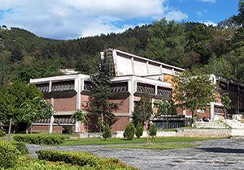
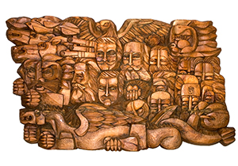

Регионален исторически музей - Благоевград
Регионален исторически музей – Благоевград е културен, научен и образователен институт с повече от половинвековна история. От създаването си през 1952 г. до днес, музеят ревностно следва мисията си да съхранява, изучава и популяризира хилядолетната история и непреходната красота на Пиринския край. Намира се в квартал „Вароша”, в близост до църквата „Въведение Богородично” и заедно с тях е обект от Националното движение „Опознай България – 100 национални туристически обекти”. Експозиционната площ на РИМ-Благоевград е разгърната на четири нива и показва природното богатство, археологическото, историческото и етнографско наследство на Благоевградска област, както и борбите за просветна, църковна и политическа независимост на българското население от региона. Биоразнообразието в Пиринския край е представено чрез научни сбирки от скали и минерали, от защитени и редки образци на природата – ендемични растения, гръбначни и безгръбначни животни. Експозицията, представяща историята на българското Средновековие, акцентира върху две големи сбирки: раннобългарски накити от X - XI век, уникални в изработката си със съчетаването на славянски, прабългарски и антични местни занаятчийски традиции; голяма колекция от живописна художествена керамика в сграфито техника от XIІІ век (гр. Мелник), както и една безценна реликва от средата на XVIII в. - руска старопечатна богослужебна книга – „Евангелие”, печатано в Москва. През 2010 г. Регионален исторически музей - Благоевград стана първия музей в страната, в който бе реализирана интерактивна експозиция по археология и екология за деца "Музеен детски кът" по проект "Подобряване работата на българските музеи с деца и млади хора".